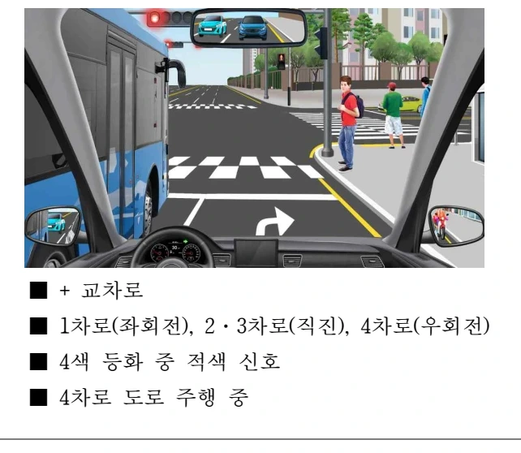

791. 准备在下方交叉路口右转。最安全的两种驾驶方法是？

- ①无需在交叉路口停止线前停车让行，缓慢行驶并右转。
- ②务必确认交叉路口前有信号灯的人行横道上是否有行人。
- ③无需非得确认从左侧道路直行至右侧道路的车辆。
- ④应注意从右侧视镜中看到的紧跟在后面行驶的两轮车。
- ⑤右转后无需非得确认有信号灯的人行横道上的行人。
查看答案
答案
② 务必确认交叉路口前有信号灯的人行横道上是否有行人。
④ 应注意从右侧视镜中看到的紧跟在后面行驶的两轮车。
依据
在车辆信号中，红色信号意味着汽车和马匹必须在停车线、人行横道或交叉路口之前停车。当车辆需要右转时，必须先在停止线、人行横道或交叉路口前停车，然后右转，而不干扰其他按信号通行的车辆。但三色右转灯为红色时，车、马不能右转。因此，必须在路口前的停车线处临时停车，检查人行横道上是否有行人以及是否有行人信号灯，右转后也必须立即小心人行横道上的行人。另外，右侧后视镜中可见的两轮车有时会在人行道和您的汽车之间直线行驶，因此需要提前打开右转向灯来做好准备。另外，右转时，需要注意道路左侧直行的车辆或道路对面左转的车辆。
依据文字为学习用机器翻译。